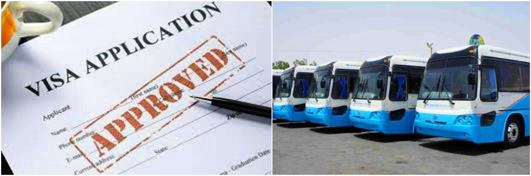

How to travel to Pakistan
Visa
Entering Pakistan by either land or air is relatively straightforward, with immigration and customs forms needing to be filled out. Please contact your nearest Pakistan Embassy or Consulate for your visa requirements.
Flights
Pakistan International Airlines (PIA) is the national carrier and numerous international airlines list Pakistan as a destination and have offices in Pakistan and abroad. Additionally there are various domestic airlines as well such as Shaheen Airlines, Air Blue and Air Indus connecting 38 domestic airports with daily flights. PIA has daily flights linking the northern tourist towns of Gilgit, Skardu and Chitral with Islamabad and additionally Chitral with Peshawar. All flights to the northern region are subject to weather conditions.

Overland from China
The Khunjerab Pass is open (weather permitting) from the 1st of May till the 31st of October. Customs, immigration and health formalities at the border post, Sost, can be completed daily from 9 till 11 am for outgoing travelers and up to 4 pm for incoming travelers. Daily PTDC and NATCO buses or private transport connect Tashkurgan with Sost.
Overland from India
The only land border open between India and Pakistan is the Wagah border, between Amritsar and Lahore, open for foreigners seven days a week. A visa is required for both countries.